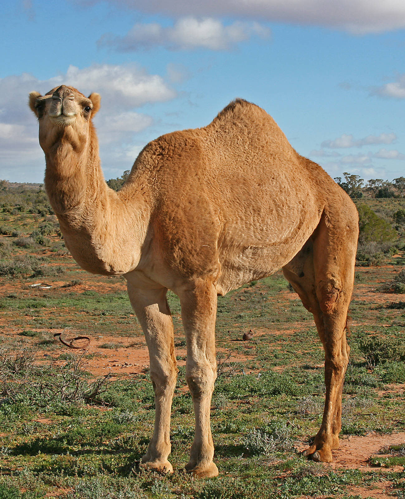

So welcome to the site! if you are not aware, this is a website where I unravel conspiracies related to words that rhyme with the word Home because it made the navigation bar look cooler than it actually is. (And due to the context of the project to get the grade I have to say that this information personally connected to me because... I want to become the top rhyme-conspiracyologist... yeah) HEY LOOK PICTURES OF UH CACTUS YEAH DEFINITELY NOT A COVER UP

Oh yeah and when I said cactus I actually meant camel funny how words work huh.
Actually while you're still here how bout you go listen to some real music.
Click here. I dare you. But open it in a new tab.